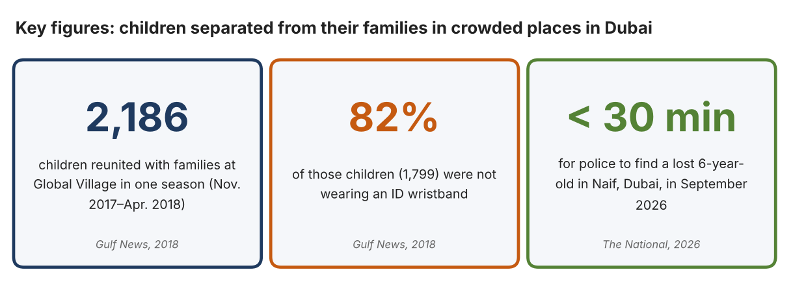
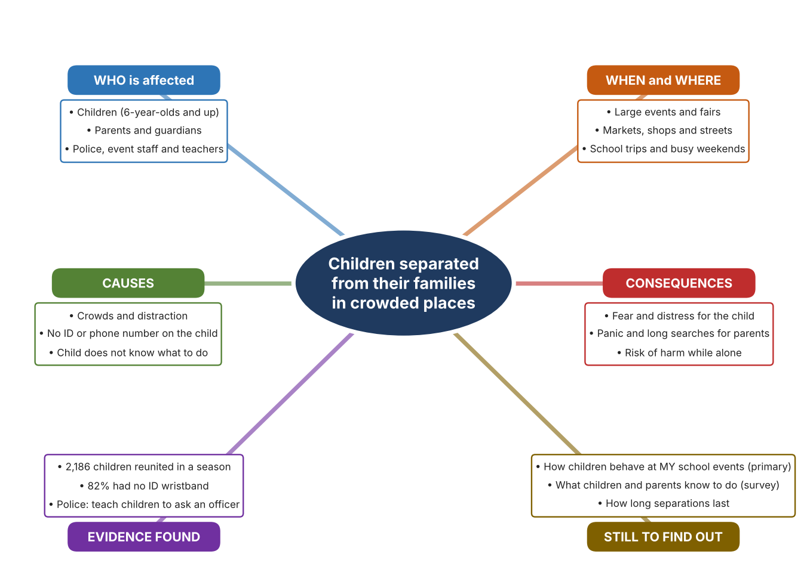
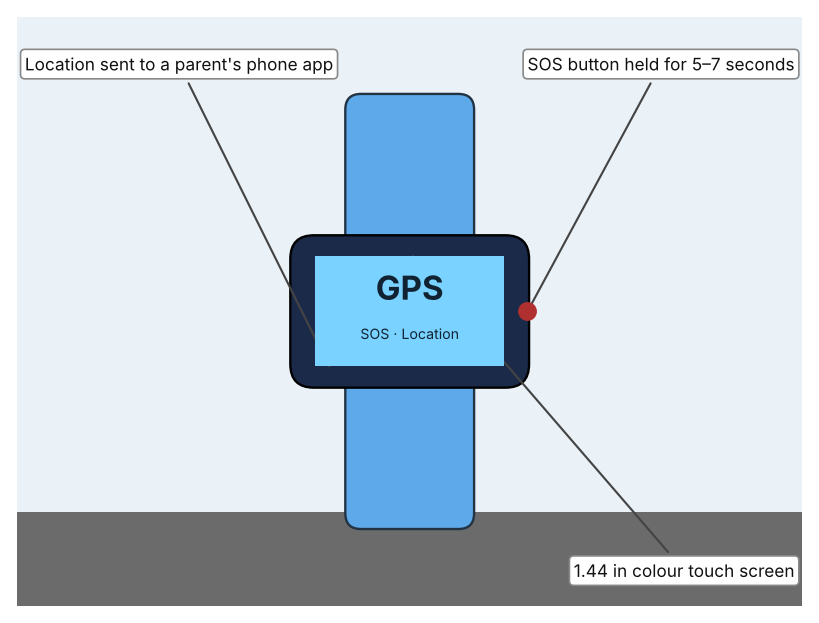
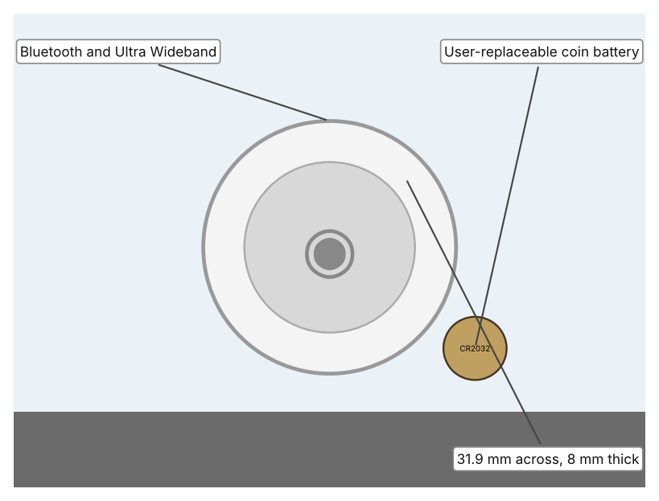
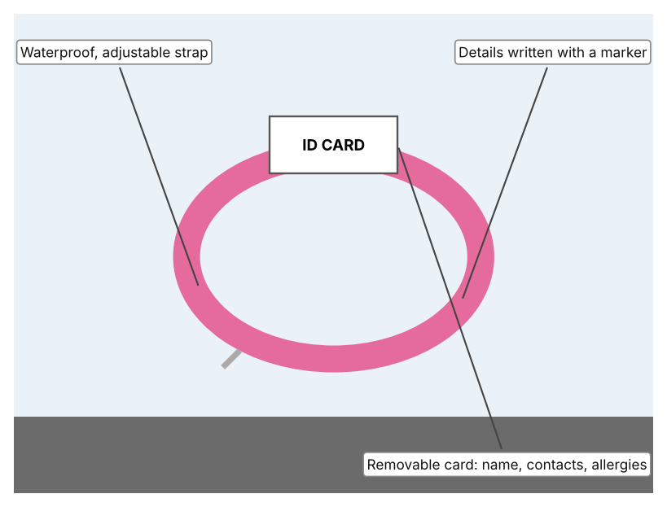

A1 · Design need
Identify and explain the problem faced by your client and community.
My client is the Student Welfare and Events Committee of a Dubai school, represented by its Head of Student Welfare. Each year the school hosts fairs, sports days and trips where hundreds of children, parents and visitors share a crowded space. The committee is concerned that a child can disappear from view in seconds, and it needs a way to reduce the time that a child spends separated from a responsible adult, and the fear and risk that come with it.
The people most affected are children aged 5 to 16, and especially younger ones who may not know a phone number or a safe person to ask. Parents and guardians are the second group, because a missing child causes immediate panic. Teachers, security staff and police are a third group, because they spend time searching and caring for children until their families arrive.
The need is real because separation happens often. In one season, from November 2017 to April 2018, Dubai Police helped to reunite 2,186 children with their families at Global Village, nearly 14 every day, compared with 1,047 in the 2015 season (Al Shouk). Of the 2,186 children, 1,799 (82%) were not wearing an identification wristband, even though free ones were offered when tickets were bought (Al Shouk). In September 2026, a six-year-old girl was separated from her father in Naif, Dubai, and was found “crying and extremely frightened” in under 30 minutes (“Dubai Police Issue Safety Plea”). Police advise parents to supervise young children closely and to teach them to approach an officer if they get lost (“Dubai Police Issue Safety Plea”).
Figure 1 summarises these numbers. The Global Village figures are from 2018 and describe one very large event, so they show a pattern and not the situation at my school. In my own words: a quick reunion is a good outcome, but even 30 minutes is a long time for a frightened child. I still need evidence from my own school events. Figure 2 is my mind map of the problem.
337 words


A2 · Research plan
Six research questions of different types, each with a priority, a research type and evidence.
| # | Question | Priority | Primary / secondary | Evidence | Brief answer |
|---|---|---|---|---|---|
| 1 | Factual: How many children are separated from their families at large events in Dubai, and how many carry identification? | High | Secondary | Gulf News, 2018 (Appendix A, Source 1) | 2,186 children reunited in one season (nearly 14 a day); 1,799 (82%) had no ID wristband; up from 1,047 in the 2015 season. |
| 2 | Factual: What do Dubai Police advise parents to do, and how quickly was a recent case solved? | High | Secondary | The National, 5 Sept. 2026 (Appendix A, Source 2) | Supervise young children closely and teach them to ask an officer or security staff for help. A six-year-old was found in under 30 minutes. |
| 3 | Conceptual: How do GPS, Wi-Fi, mobile networks and Bluetooth find a person or object, and how accurate is each? | Medium | Secondary | Gelius product page (Appendix A, Source 3); Apple support page (Source 4) | GPS is about 5 to 10 m in the open; mobile-network location (LBS) 100 to 1,000 m; Wi-Fi 10 to 40 m. Bluetooth with Ultra Wideband can guide a person to a nearby tag. Indoors, accuracy falls. |
| 4 | Debatable: Who should carry the main responsibility for preventing a child from getting lost: parents, event organisers or technology? | Medium | Secondary | Appendix A, Sources 1, 2, 3 and 5 | Parents know their child and can supervise; organisers control the space and staff; technology can help but can fail or be forgotten. My view: supervision comes first, with simple tools as back-up. |
| 5 | Debatable (challenges my assumption, UAE source): Do children get lost because they lack tools, or because of preparation and supervision? | High | Secondary | Gulf News, 2018 (Appendix A, Source 1); The National, 2026 (Source 2) | Free wristbands were offered, yet 82% of lost children were not wearing one, and police stress supervision and teaching. Conclusion: tools exist, so the problem is as much about habits and preparation as about missing technology. |
| 6 | Factual (primary): How do children and parents behave at our own school events, and do children know what to do if separated? | High | Primary | Own event observation and student survey (Appendix A, Sources 6 and 7) | [Student data needed: write the counts from your observation sheet and the survey averages, then two sentences on the pattern you see.] |
A3 · Existing products
Three significantly different products, each analysed with ACCESS FM, with pros and cons.
Product 1: Children's GPS smartwatch (Gelius PRO KID)

Illustration by the author based on “Gelius PRO KID GP-PK001,” Gelius (Appendix A, Source 3). [Student: replace with a photo from the source, cited MLA 9]
Product 2: Bluetooth item tag (Apple AirTag)

Illustration by the author based on “AirTag Technical Specifications,” Apple Support (Appendix A, Source 4). [Student: replace with a photo from the source, cited MLA 9]
Product 3: Child ID wristband (Vital ID)

Illustration by the author based on “Child Safety Wristband,” Vital ID (Appendix A, Source 5). [Student: replace with a photo from the source, cited MLA 9]
ACCESS FM analysis
| ACCESS FM | Product 1 | Product 2 | Product 3 |
|---|---|---|---|
| Aesthetics | Coloured plastic case and silicone strap with a 1.44 in colour touch screen (Gelius). | Compact disc-shaped tag; the page lists only its dimensions (Apple). | Colour options such as pink camo; ID card is kept out of sight (Vital ID). |
| Cost | 1,999 UAH (reduced from 2,199) plus a SIM and mobile plan (Gelius). | Price is not shown on the support page (Apple). | £10.95, reduced from £14.95, with free engraving (Vital ID). |
| Customer | Children with parents who use the Setracker app on a smartphone (Gelius). | Anyone with an iPhone, iPad or iPod and an Apple Account; Precision Finding needs an iPhone 11 or later (Apple). | Children aged about 3 to 9 with a wrist up to 15.2 cm (Vital ID). |
| Environment | 500 mAh battery charged by magnetic USB cable; the page quotes both 24 hours and 3 days of use. | Replaceable CR2032 battery; made with 100% recycled tin solder and free of mercury, PVC and beryllium (Apple). | Latex free; no battery needed (author's reading). |
| Size | Case 55 × 43 × 16 mm; strap 142–198 mm; weight not listed (Gelius). | 31.9 mm across, 8.0 mm high, 11 g (Apple). | Fits wrists up to 15.2 cm and is adjustable with a Velcro strap (Vital ID). |
| Safety | Hold the SOS key 5–7 seconds to call a stored number and send location. IP67 water and dust rating. Bystander view: a finder sees the child with a phone-like device. | Lost Mode through NFC; IP67; anti-stalking is not covered on the page. Bystander view: it tracks an object, not a child, unless attached. | Waterproof; the card lists name, date of birth, emergency contacts, allergies and medication. Bystander view: any adult who finds the child can read the number. |
| Function | Uses GPS (5–10 m outdoors), mobile network (100–1,000 m) and Wi-Fi (10–40 m); sends updates every 10 minutes, hourly or on request; calls, texts and camera. | Bluetooth finds the tag nearby; Ultra Wideband gives Precision Finding; a speaker lets the owner hear it. | Passive: a finder reads the card and calls a parent. |
| Materials | Plastic case, silicone strap (Gelius). | Materials are not described apart from the solder and the substances it avoids (Apple). | Strap material is not named; ID card material is not specified (Vital ID). |
Pros and cons
| Product 1 | Product 2 | Product 3 | |
|---|---|---|---|
| Pro | Shows a child's position away from the child's own phone, and the child can call for help. | Small, light and made by a company with a large finder network; sounds a tone to guide someone to it. | Cheapest, no battery or signal, and gives a finder the vital information immediately. |
| Con | Needs a SIM, charging and a smartphone app; accuracy drops indoors and battery claims conflict. | The page does not give its price, range or anti-stalking features, and it needs an Apple device. | Passive: it only works if someone finds the child and reads it, and the child must keep wearing it. |
A4 · Design brief
Restate the need, summarise the research and the existing products, and state the design intent.
My client, the Student Welfare and Events Committee of a Dubai school, needs to reduce the time that children spend separated from a responsible adult at crowded events, and the fear and risk that come with it. The problem is real: Dubai Police helped to reunite 2,186 children with their families at Global Village in a single season, nearly 14 each day, and 82% of them were not wearing an ID wristband (Appendix A, Source 1). In September 2026 a six-year-old was found in under 30 minutes, but she was “crying and extremely frightened” (Appendix A, Source 2).
My research shows that the cause is not only a lack of tools. Free wristbands were offered at Global Village, yet most lost children did not wear one, and police stress supervision and teaching children to ask an officer for help (Appendix A, Sources 1 and 2). I learned that location technology depends on conditions: GPS is accurate to about 5 to 10 m in the open, but mobile-network location can be 100 to 1,000 m out, and indoor accuracy is weaker (Appendix A, Source 3). My debatable questions led me to decide that supervision comes first and tools are a back-up. I still need evidence from my own events, which I will collect with my observation sheet and survey (Appendix A, Sources 6 and 7).
I analysed three very different existing solutions. A children's GPS watch costs 1,999 UAH, sends location to a parent's app and has an SOS button, but it needs a SIM, charging and a smartphone, and its indoor accuracy is lower (Appendix A, Source 3). A Bluetooth tag is only 31.9 mm across and weighs 11 g, with sound and Precision Finding, but it needs an Apple device and does not describe child safety features (Appendix A, Source 4). A waterproof ID wristband costs £10.95 and lists name, contacts and allergies, but it only helps after someone finds the child (Appendix A, Source 5). They give me three ideas for inspiration: reporting where a child is, helping an adult to find them, and telling a finder who to call. Each has a weakness that another covers.
My design intent is therefore to create a solution that shortens the time a child is separated from a responsible adult, by helping adults to find a child quickly, by helping a child to get help, or by both. It must be affordable for a school, simple enough for young children and busy parents to use without training, reliable in crowded indoor and outdoor places, and respectful of the child's privacy. I have deliberately not fixed what form it will take. That decision will be made in Criterion B, after I analyse my own observations and survey against the evidence in Appendix A.
462 words
Appendix A · Research notes and sources
Secondary sources in MLA 9, with notes and where each source is used.
| # | Source (MLA 9) | Key notes | Used in |
|---|---|---|---|
| 1 | Al Shouk, Ali. “2,186 Children Lost and Found in Global Village Last Season.” Gulf News, updated 1 Nov. 2018, gulfnews.com/uae/2186-children-lost-and-found-in-global-village-last-season-1.2026484. Accessed 21 Oct. 2026. | Nearly 14 children a day; 2,186 reunited (Nov. 2017–Apr. 2018); 1,799 (82%) without an ID wristband; 1,047 in the 2015 season. Free wristbands offered with tickets. | A1; A2 Q1 and Q5; A4. |
| 2 | “Dubai Police Issue Safety Plea to Parents after Missing Girl, 6, Found in 30 Minutes.” The National, 5 Sept. 2026, www.thenationalnews.com/news/uae/2026/09/05/dubai-police-issue-safety-plea-to-parents-after-missing-girl-6-found-in-30-minutes/. Accessed 21 Oct. 2026. | Girl found in under 30 minutes; “crying and extremely frightened.” Advice: supervise closely, teach children to respond if separated and to approach an officer. | A1; A2 Q2 and Q5; A4. |
| 3 | “Kids Smart Watch Gelius PRO KID GP-PK001 with GPS Tracker, Blue.” Gelius, gelius.ua/en/p/gp-pk001-blue/. Accessed 21 Oct. 2026. | 1,999 UAH; GPS 5–10 m, LBS 100–1,000 m, Wi-Fi 10–40 m; SOS hold 5–7 s; 500 mAh; IP67; 55 × 43 × 16 mm; micro SIM; Setracker app. | A2 Q3; A3 Product 1; A4. |
| 4 | “AirTag Technical Specifications.” Apple Support, support.apple.com/en-kz/111847. Accessed 21 Oct. 2026. | 31.9 mm, 8 mm, 11 g; IP67; CR2032; Bluetooth and U1 Ultra Wideband; Precision Finding (iPhone 11 or later); Lost Mode by NFC; introduced 2021. | A2 Q3; A3 Product 2; A4. |
| 5 | “Child Safety Wristband.” Vital ID, theidbandco.com/child-safety-wristband. Accessed 21 Oct. 2026. | £10.95; ages about 3–9; wrist up to 15.2 cm; latex free; 100% waterproof; removable ID card with name, date of birth, contacts, allergies and medication. | A3 Product 3; A4. |
| 6 | Primary: event crowd observation sheet, completed by the student on [date]. Accessed own data. | [Student: summarise your counts.] | A2 primary question; A4. |
| 7 | Primary: survey of [number] people, completed on [date]. | [Student: summarise your averages.] | A2 primary question; A4. |
Primary research instrument 1: event crowd observation sheet
Student observes one school event for 15 minutes.
| Minute block | Children in view | Children with no adult nearby for over 1 minute | Children wearing ID | Staff points visible | Notes |
|---|---|---|---|---|---|
| 0–5 | |||||
| 5–10 | |||||
| 10–15 | |||||
| Total |
Primary research instrument 2: survey
Rate each statement from 1 (strongly disagree) to 5 (strongly agree). Collect responses with permission and record no names.
| Statement | 1 | 2 | 3 | 4 | 5 | Total responses |
|---|---|---|---|---|---|---|
| I know what to do if I get separated from my family. | ||||||
| I know a phone number or a safe person I could ask for help. | ||||||
| Large events make me worry about getting lost. | ||||||
| I carry or wear something with my family's contact details. |